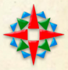

Stare a historicke mapy Cech, Moravy a Slezska
Projekt Staré Mapy: Rozcestník pro historickou kartografii a geoinformatiku
Tyto webové stránky se snaží prezentovat veřejnosti příjemnou formou kolekci starých map s územím ČR.
Zároveň se snaží být základním zdrojem a rozcestníkem pro zájemce o historickou kartografii v České Republice.
Pošlete nám odkaz, zapojte se do tohoto projektu...
Staré a historické mapy
Nej.. odkazyStaré mapy digitalizované v UJEP Staré dokumenty Manuscriptorium Mulitmediální učebnice | Old Maps OnlineNa tento projekt přímo navazuje grant Old Maps Online, který dále rozvíjí software pro zpracovaní starých map a posouvá projekt StareMapy.cz na mezinárodní úroveň. Další novinky proto naleznete na adrese: http://blog.oldmapsonline.org/ Spolupráce s evropským projektem DigMap.eu Navázali jsme spolupráci s lidmi z projektu DigMap.eu. Vřele doporučuju podívat se na jejich webové stránky případně i newsletter. Workshop v Lisabonu - naše prezentace. Veduty v Google EarthMožnost prezentace rozměrných vedut rozsekaných na dlaždice TMS pomocí GDAL2Tiles. Spusťte si video: Byla předvedena na konferenci AKM07 v Národním archivu v Praze. Druhé místo v soutěži Diplomová práce roku 2007
S diplomovou prací, která odstartovala tento projekt, jsme získali druhé místo v celostátní soutěži DiplomovaPrace.cz organizované společností Abra, pod záštitou MŠMT a dalších. Projekt GDAL2Tiles - Google Summer of Code 2007
Ukázka a návod jak na to... Projekt je nyní reálně využit např. v Národní knihovně Skotska pro publikovánímap. Online nástroj pro Geo záznam v MARC
Geotagging pro bibliografický záznam jen s pomocí prohlížeče. Jednoduše označíte obdelníkem oblast na mapě a on vám vypíše zformátované souřadnice pro zkopírovaní do polí knihovního záznamu. Staré mapy Brna v0.1 pro Google Earth využívající existujích dat ve formátu ZoomifyChcete vidět staré mapy Brna (zatím dvě mapy: III vojenské mapování z roku 1878, a Jančův plán velkého Brna z roku 1919) ve 3D nad aktuálním satelitním snímkem? Spusťte si video náhled: Návod na zprovoznění: 1. Nainstalujte si Google Earth (je nutná poslední verze) 2. Otevřete v něm tento soubor: StareMapyBrnav01.kmz Děkujeme:
Moravská zemská knihovna v Brně (hosting databáze map, výzkumný záměr Historické fondy MZK 2004-2010) ČVUT FSV, Kartografie a geodézie, Praha Masarykova univerzita, Brno (diplomová práce, na FI MU) Laboratoř geoinformatiky Univerzity J.E.Purkyně (spolupráce) National Geographic Magazine Česká Republika (doménové poplatky...snad, zatím nepotvrzeno) Google Inc. (Web/Email hosting v rámci projektu Google Apps for Your Domain) |

{kind=link}
Připomínky, náměty a dotazy posílejte do konference s archívem
Copyright (C) 2006 - Projekt Projekt Staré mapy
Založil Klokan Petr Přidal
Reklama: Scootland - skútry, scooter tuning, náhradní díly